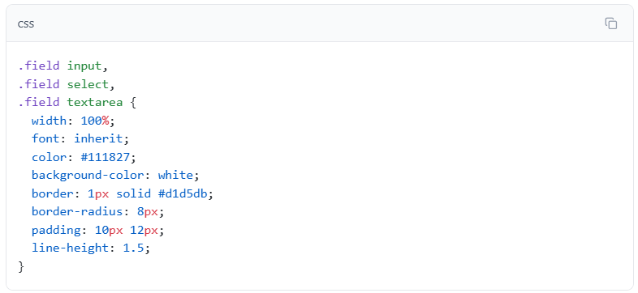
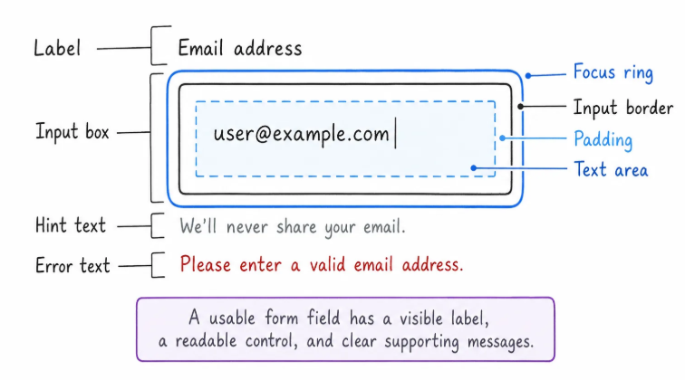
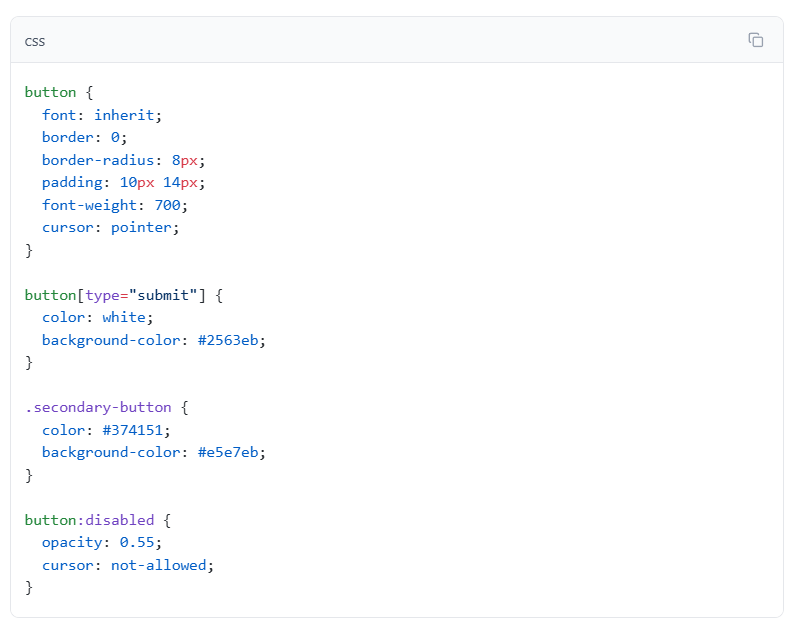
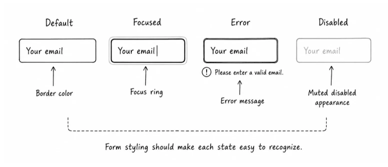

18 Styling Forms
CSS practice
Style a form people can actually use
The form should feel calm, readable, and clear in its normal, focused, error, and disabled states.
Make Controls Match the Page:
Browsers give form controls their own default styling. That is useful because the controls work immediately, but the defaults may not match your page font, spacing, or borders.
Start with the main text controls:

.field input, .field select, and .field textarea target the controls that sit inside normal form fields. The checkbox is not inside .field, so it will not accidentally become width: 100%.
width: 100% makes each control fill the form column. That creates a clean edge for the user to scan.
font: inherit makes the controls use the same font as the page. Form controls often have browser-specific font defaults, so this line keeps the form visually consistent.
color controls the typed text, background-color controls the inside of the control, and border makes the editable area visible. border-radius softens the corners, padding gives text room inside the control, and line-height keeps typed text comfortable to read.

Buttons Needs States Too:
The submit button is the main action. The disabled "Save draft" button shows that an action can exist but not be available.
Add the button styles:

font: inherit keeps button text consistent with the page.
border: 0 removes the browser's default button border because this design uses background color and shape instead.
border-radius and padding make the button feel like a clickable control.
cursor: pointer gives mouse users a familiar cue on enabled buttons.
button[type="submit"] targets the main submit action.
.secondary-button targets the lower-priority button.
button:disabled styles real disabled buttons. The behavior comes from the HTML disabled attribute, and CSS only changes how that state looks.

Form Styling Map:
| Form Part | CSS Job |
|---|---|
| Form Wrapper | Create a readable card or section around the form. |
| Field group | Keep label, control, hint, and error text together. |
| Label | Stay visible and easy to scan. |
| Input, select, textarea | Match the page font, spacing, border, and width. |
| Placeholder | Give an example without replacing the label. |
| Focus state | Show exactly which control is active. |
| Error state | Show what needs fixing near the field. |
| Checkbox or radio | Keep native behavior, adjust spacing and accent color. |
| Button | Show action priority and disabled state clearly. |
The question is not "How do I make every control custom?" The better question is: "Can the user understand and complete this form?"